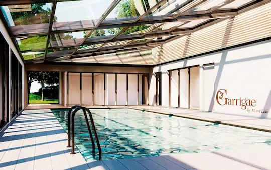
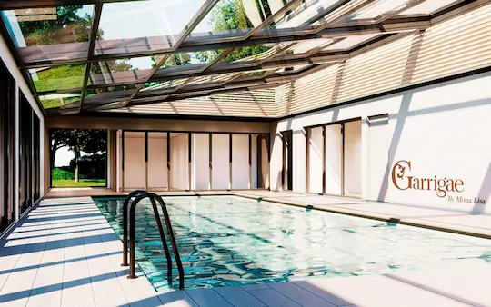

Bi Folding Doors in Dubai
section-db1756a
Aluminium Bi Folding Doors and Stacking Systems by AIRCLOS are an effective way to maximize the available space in residential or commercial properties, while maintaining aesthetic appeal by
creating a stunning space with brilliant transparency. AIRCLOS system allows you to bring the outdoors in while providing resistance to undesirable weather conditions. Countless options are available to create large living or functional spaces that seamlessly transition outdoors to indoors
COMMERCIAL APPLICATIONS : Hotels | Resorts | Restaurants | Sports Venues Malls | Casinos | Spas | Banquet Halls | Banks Offices | Wineries | Airports
RESIDENTIAL APPLICATIONS : Patios | Balconies | Exercise Rooms | Sunrooms
section-fc582c6
section-794b1ec

section-3454b51
Frameless Movable Glass System
The frameless bifolding doors glass wall system is composed of individual glass panels that may be slid aside, rounded any corner, and opened fully, with the panels concertained at one or both ends. The glass panels are tempered, significantly enhancing their mechanical properties (flexion, compression, impact resistance). In addition, in case of breakage, the glass breaks into small fragments, eliminating the possibility of causing severe injuries.
Airclos Frameless Glass Walls can be employed :
- For extending the functionality of outdoor areas, for pool enclosures, rooftops, pergolas, balconies, winter gardens, etc.
- To enclose outdoor areas like porches, sun lounges, balconies, terraces, galleries, etc.
- To partition interiors without shrinking the visual area, in hotel and restaurant salons, to partition sales or office spaces in car showrooms, reserved areas in public places for smokers, etc.
section-772eb94
a. All Glass Sliding Walls Manual
The shopMaster GSW-M glass sliding partition system allows for different partition walls and shop fronts to be created and is suitable for shop-in-shop applications. It is possible to apply solutions for nearly any kind of floor layout, giving freedom to planners unlimited creativity. As a function of the equipment used, the glass sliding panel system can be equipped in linear, curved, or segmented versions. The units have several possible array options, with no need for a floor guide.
The compact design of the system necessitates only little space for parking niche and roller track. Bi folding doors in Dubai, for instance, can be planned alike to provide versatile solutions. Utilizing Swing&Slide panels with a door closer is one of the ways to create variable passages. Top-notch, ball-bearing-supported rollers ensure smooth operation and reliability during opening and closing the elements. In the event of glass breakage, the hardware on special doors prevents the clamping profiles from falling out.
b. All Glass Sliding Walls Automatic
Shopmaster GSW-A is the automatic all-glass sliding panel system that boasts a range of design possibilities for architects and planners and offers greatest convenience for users or operators. Its space-saving design reduces the amount of room required for roller track and parking niche. The system features high-performance carriage technology with plastic-coated, ball-bearing-supported rollers, providing quiet panel movement.
The 86.5 mm low-profile roller track installation height allows flush mounting against ceilings nearly anywhere. The required floor guide offers stability and convenience. In the event of a power outage, the automatic system can be manually pushed for increased safety. The frameless bifolding doors are also an excellent choice when there is a requirement for a more open look in commercial or residential environments, with smooth, easy operation.
section-7ccbb8b
Retractable Aluminium Roof
We have the right retractable roof skylight system for every need, which can either have a fixed or movable design depending on the application. The system is highly engineered and can be fully motorized for total convenience or manually operated. Aluminium Retractable roof skylights are completely watertight and airtight and provide a high degree of insulation against the elements, ensuring optimal energy use. The high-quality design of the profiles that make up the system ensures that they are also lightweight.
section-90473b3
 

High Performance Roofs
You can now make the most of your terrace, garden balcony, or conservatory year-round with AirClos retractable roofs. On warm days, open the roof completely and enjoy fresh air; at night, dine under the stars. One of the main benefits of our system is the unobstructed opening: when completely retracted, at least 75% of the area is exposed, providing you with optimum enjoyment. Even during extreme weather conditions, you are shielded from the elements while natural light illuminates your space. Similar to bi folding glass doors, these roofs enable natural elements to blend perfectly with your living space.
The AirClos retractable roofs are wind- and waterproof, giving insulation and firm protection from the weather. Due to their good profile design, they are also durable and strong. Stacking doors in Dubai are also a great option for clients who need flexibility in their space. The roofs also provide better performance with insulation, giving maximum comfort no matter the weather. AirClos systems are ideal for both residential and commercial buildings, giving excellent ventilation choices.
AirClos sliding automatic roof system with three or four glazing panels provides state-of-the-art technology in aluminium and glass roofs. It is opened up to a maximum of two-thirds of the total width, with the top panel remaining stationary. The system is delivered ready for installation with panels, guides, and motors pre-mounted. The glazing panels are made in various thicknesses, such as 3+3 mm glass, a 16 mm gap, and 4-, 5-, or 6-mm temper glass. Low-emission and sun-control glasses can be arranged upon request.
The slope recommended is 10%, but other slopes are possible. The height that can be obtained using the triple track guide is 4.5 meters, while 7 meters can be attained with the four-track system. These systems are ideal for constructing a contemporary environment, just like the look of frameless bifolding doors, which integrate smoothly into the entire design.
Features
- Two different compositions of glass
- Modules assembling independently or in conjunction with each other
- LED Lighting (Optional)
- Restricted profiles design
- Fitting doesn't require any masonry
- Wind & rain sensor (Optional)
At Glaztech, you can discover the various types of reliable Bi folding Doors in Dubai.
The folding mechanism of bi folding doors typically operates on a track system, allowing the panels to slide and fold to one side of the opening. Some bi folding doors also come with additional features such as locks and handles for added security and ease of use. In recent times, bi folding doors have become a popular choice for homeowners and businesses alike due to their versatility, functionality, and aesthetic appeal.
Glaztech offers the most energy-efficient Bi folding Doors in Dubai.
The panels are usually made of glass, but can also be made from other materials such as wood or metal. They can be designed to fold to the left or right and can be configured to fold in or out depending on the specific design of the door.
Get highly-durable Bi folding Doors in Dubai at Glaztech now.
Bi folding doors are a popular choice for homeowners who want to create a seamless transition between indoor and outdoor living spaces. They are often used in sunrooms, porches, and outdoor dining areas, as well as homes with large, open floor plans.
In addition to their aesthetic appeal, bi folding doors offer several practical benefits. They allow for plenty of natural light to enter a space, which can help to reduce energy costs by minimizing the need for artificial lighting. They also provide excellent ventilation and can help to improve indoor air quality by allowing fresh air to circulate throughout a space. Bi folding doors also help to increase the value of a home by adding a desirable feature that is attractive to potential buyers.
Whether you are looking for residential or commercial space, Glaztech offers a wide range of Bi folding Doors in Dubai to suit your requirements.
Choose the right type of Bi folding Doors in Dubai for your space at Glatech.